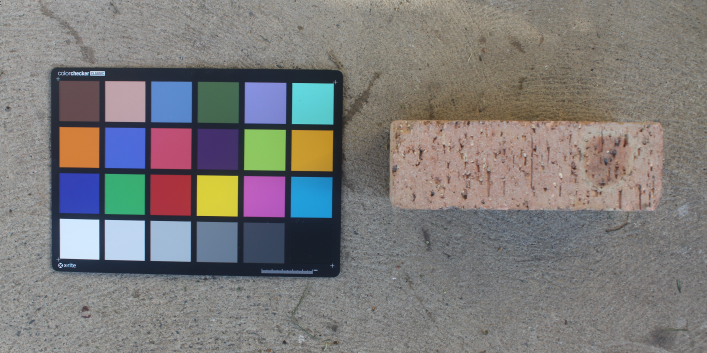
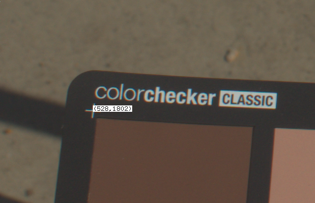

Radiance is a rendering engine used to perform accurate lighting simulations. Sometimes, Radiance renders are only concerned with average luminance and illuminance values, which means that details like variations in the surface and even what colour an object is isn't that important (as long as the average reflectance is correct!). The result is a scientifically accurate simulation, that unfortunately looks like a rather dull and unrealistic render. The good news is that with some properly calibrated image textures (or patterns, in Radiance speak), the render can look a lot more sexy!
The example below is the NRC office MGC example scene.
One of the most powerful tools a CG artist has to bring life to a render is to use different types of image textures. The most basic of these is known as a "diffuse map", an image that holds the RGB values of the different diffuse (i.e. non-specular) colours of the object. However, these images are rarely calibrated to make sure that their pixel values correlate with the actual spectral reflectance of red, green, and blue wavelengths of the visible spectrum. For instance, often these image maps will include absolute black (an RGB of 0, 0, 0) or absolute white (an RGB of 255, 255, 255). This is inccorrect, as most objects do not ever absolutely absorb all light, and absolutely reflect all light.
Taking a photo with the Macbeth colour checker
Before calibrating an existing image texture, you will need to find out the true colour of a real life sample. Get a sample of that material and take it outside on a bright and sunny day along with your Macbeth colour checker chart. I have purchased the X-Rite ColorChecker Classic. It's best to do this with sunlight as it is a high quality light source that emits light across the full visible spectrum, unlike indoor artificial lights which are relatively spikey.

Take a RAW photo with the colour chart next to the object with the same even lighting across both the chart and the object. Make sure that you do not shadow the sample or the chart, and try to minimise self shadowing, or specular highlights for shinier materials. If you will take multiple photos, set your camera setting to manual to prevent any unwanted "autocorrection" by the camera.
You can then convert the raw file (in my case, a .CR2 file by Canon) to the
.hdr format as so:
$ dcraw -4 *.CR2
$ ra_ppm -r -g 1 IMG_6054.ppm macbeth.hdr
The -4 argument to dcraw is shorthand for passing -6 -W -g 1 1 as an
argument. -6 writes 16 bits per sample instead of eight, -W uses a fixed
white balance, and -g 1 1 sets a straight gamma curve. This tip is provided by
Greg Ward, as per his advice to avoid any non-linear quantization
step.
Run Macbethcal
Macbethcal requires the pixel coordinates of the 4 corners of the colour checker
chart. The chart has a crosshair on each corner, so open up the image with
ximage, and then press p when your cursor is over a corner to print the
coordinates. You can use Ctrl+LMB to pan around the image if the image is
larger than your screen (don't resize the image!).

Then run macbethcal with the following syntax, replacing things like TLX
with the top left X coordinate and TLY with the top left Y coordinate, and so
on. The order is top left, top right, bottom left, and bottom right.
Assuming that this succeeds (depending on lighting conditions and camera
abilities), you can view the results in the debug.hdr file. This'll show you
how many colours it was able to match and you can visually see how close the
colours are. This is useful to know how close the calibration was, and whether
there are certain colours that are unreliable. Any colours with a diagonal
hatching across it were not able to be calibrated.
Finally, use pcomb to calibrate the macbeth.hdr image based off the
generated macbeth.cal in the previous step. This will generate a new
calibrated file called fixed.hdr. You can use this file directly in your image
textures.
The full sequence of commands for this process is shown below:
$ ximage macbeth.hdr
$ macbethcal -d debug.hdr -p TLX TLY TRX TRY BLX BLY BRX BRY macbeth.hdr macbeth.cal
$ ximage debug.hdr
$ pcomb -f macbeth.cal macbeth.hdr > fixed.hdr
Calibrate other custom image textures
The easiest way to use a texture is to use the calibrated .hdr directly after
running pcomb on it. In this case, we can apply the colorpict to a, say,
plastic material with an RGB reflectance of 1 1 1. This RGB value is
multiplied by the colorpict, so the fixed.hdr values remain unchanged and
truly represent the object's RGB. For instance:
void colorpict diffuse-map
7 red green blue fixed.hdr . frac(Lu) frac(Lv)
0
0
diffuse-map plastic material
0
0
5 1 1 1 0 0
However, it may be such that you have a custom painted texture, or an image
texture downloaded from a third party. To deal with this, first take a photo
with the colour checker and calibrate it as described above. Then, view it with
ximage and sample the average colour RGB value at an area of the object that
you can easily identify. For instance, if you have a calibrated .hdr of a
wood panel with wood grain running through it, use the mouse to select a marquee
of it in ximage, then press c to see the average RGB. Let's say it's .1 .2
.3.
Now open up your custom image texture of a wooden panel you have digitally
painted with ximage. Again, sample the corresponding surface that is meant to
have the same RGB as your physical sample using a marquee and by pressing c.
Let's say it's .3 .1 .6.
This with these two sets of values, we will need to apply it to our example
plastic material as follows. These multipliers are determined in order to
convert .3 .1 .6 to .1 .2 .3.
diffuse-map plastic material
0
0
5 .33 2 .5 0 0
Issues with specular materials
An issue with this method is that it does not deal very well with specular materials. More specular materials will be measured to be darker than their true diffuse RGB reflectance. At the time of writing, I do not have a good general solution for this, and recommend heuristic measurements to test under known conditions.
However, I have rendered out various benchmark examples of specular and roughness values that you might find useful.